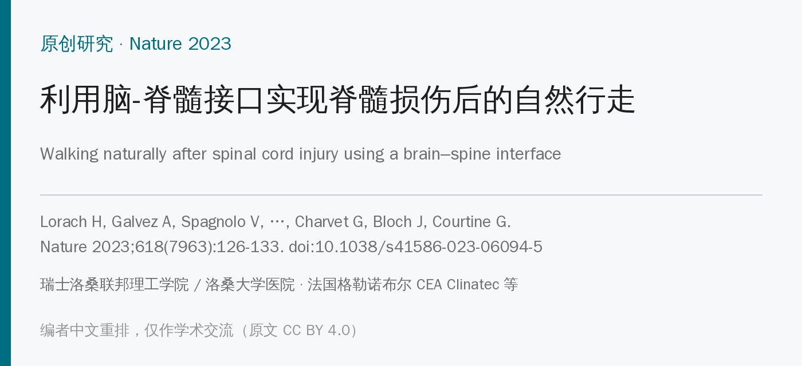
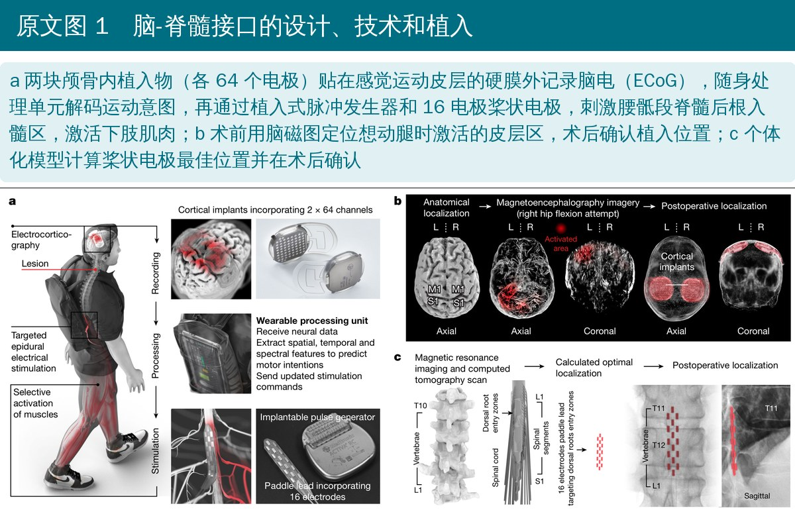
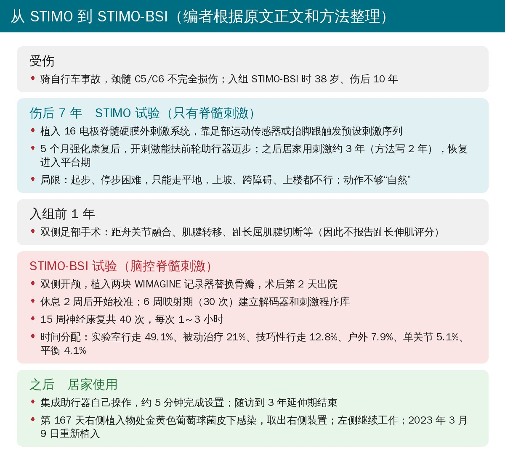
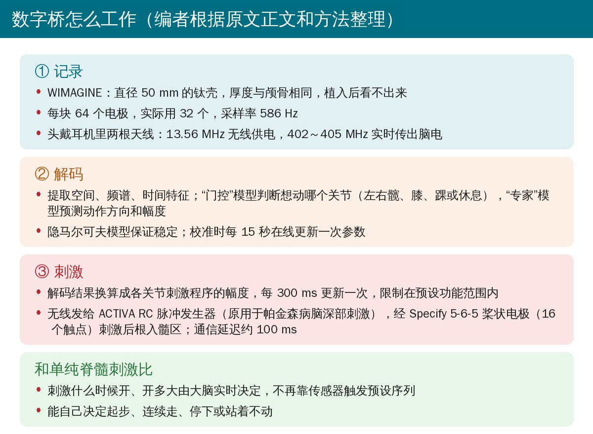
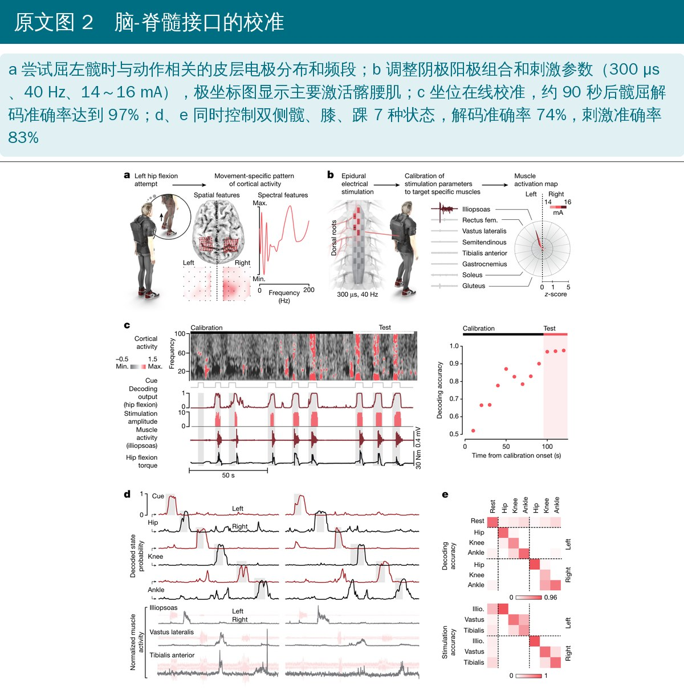
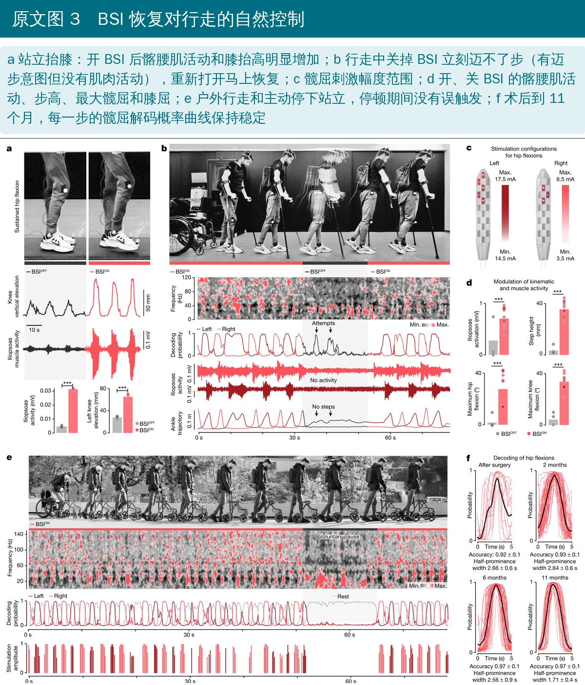
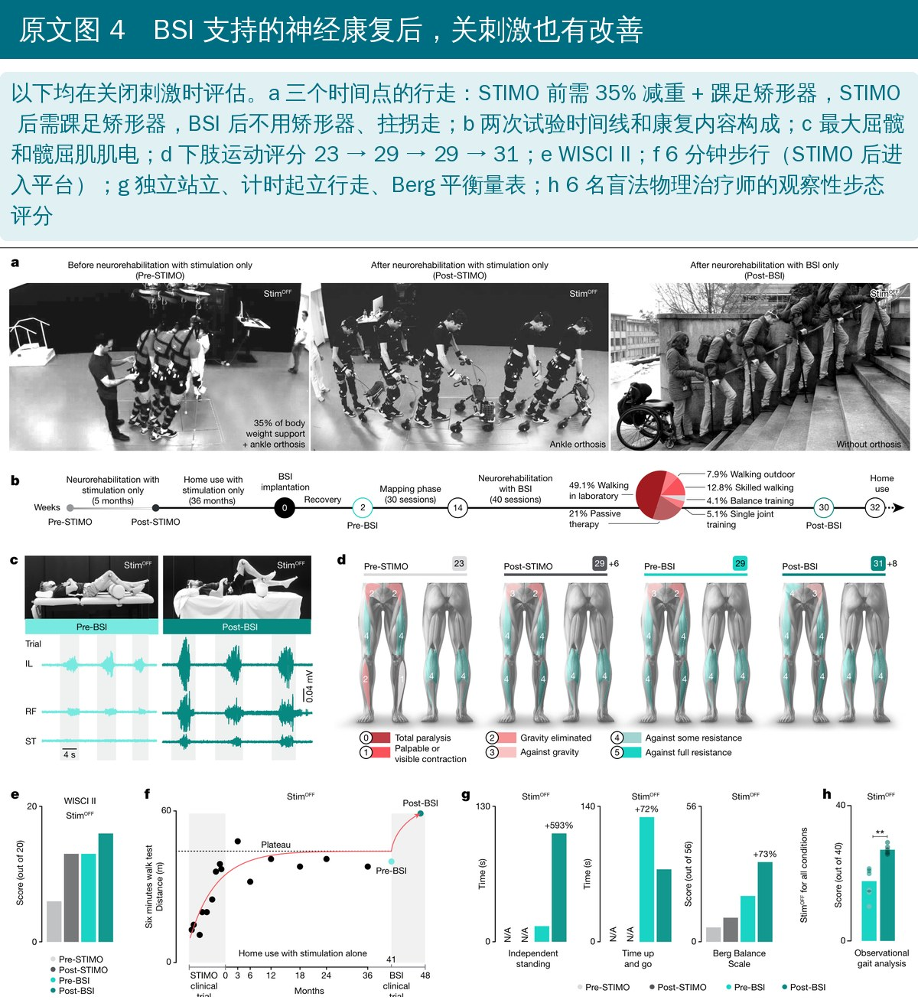
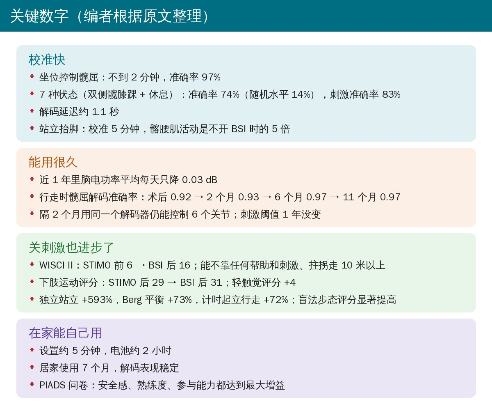
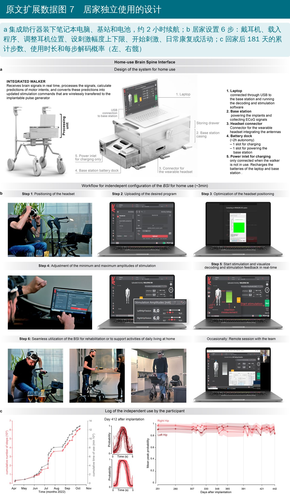

🔖原文信息（编者中文重排）
📚 文献信息
▪ Lorach H, Galvez A, Spagnolo V, Martel F, Karakas S, Intering N, et al. Walking naturally after spinal cord injury using a brain–spine interface. Nature. 2023;618(7963):126-133. doi:10.1038/s41586-023-06094-5
▪ 中文题目：利用脑-脊髓接口实现脊髓损伤后的自然行走
▪ 作者来自瑞士洛桑联邦理工学院（EPFL）、洛桑大学医院（CHUV）、法国格勒诺布尔 CEA Clinatec 等；通讯作者 Charvet、Bloch、Courtine
▪ 文章类型：原创研究，单个受试者的临床可行性研究（STIMO-BSI，NCT04632290），开放获取（CC BY 4.0）
走路的指令从大脑发出，由腰骶段脊髓里的神经元执行。多数脊髓损伤并没有直接毁掉这些神经元，而是切断了大脑下传的通路，结果就是永久瘫痪。
• 团队此前证明：靶向硬膜外电刺激腰骶段脊髓的后根入髓区，按预设的时空序列刺激，能让脊髓损伤患者恢复站立和基本行走
• 但这种刺激要靠穿戴式运动传感器或代偿动作（比如抬脚跟）去触发，患者觉得不够自然
• 而且难以根据地形和自己的意愿随时调整腿的动作，起步、停步、上坡、上楼都困难
这项研究的设想是：在大脑和脊髓之间搭一座“数字桥”，让大脑信号直接实时控制刺激的时机和强度。
• 38 岁男性，10 年前骑车事故导致颈髓 C5/C6 不完全损伤
• 伤后 7 年参加了 STIMO 试验：植入脊髓刺激系统，5 个月强化康复后，开刺激能扶前轮助行器迈步
• 之后在家坚持用刺激约 3 年，恢复进入平台期，所以加入 STIMO-BSI
• 入组前 1 年做过双侧足部矫形手术（距舟关节融合、肌腱转移等），所以趾长伸肌评分不纳入分析
• 脑端：术前用 CT 和脑磁图找到“想动腿”时激活的皮层区；全麻下双侧开颅，把两块 WIMAGINE 记录器（直径 50 mm、64 个电极）直接替换颅骨骨瓣，贴在硬膜外记录皮层脑电（ECoG）；术后第 2 天出院
• 脊髓端：沿用 STIMO 时植入的 16 电极桨状电极，放在腰段脊髓后根入髓区上方，连接腹部皮下的脉冲发生器
• 中间：头戴耳机无线供电、接收脑电，随身处理单元解码运动意图，再无线调整刺激，通信延迟约 100 ms

🔖原文图 1（加中文说明）

🔖编者根据原文正文和方法整理

🔖编者根据原文正文和方法整理
• 找脑信号：坐位尝试左右髋、膝、踝的动作，同时记录脑电，找出与每个动作相关的电极、频段和时间窗；腿部相关电极在植入物最内侧、中央沟前方，β 和 γ 全频段都含有运动信息
• 配刺激程序：调整阴极阳极组合、频率和幅度，建立一套能分别活动双侧髋、膝、踝的刺激程序库
• 在线自适应：算法一边用一边更新参数，“门控”模型判断想动哪个关节，“专家”模型预测动作幅度，结果每 300 ms 更新一次刺激

🔖原文图 2（加中文说明）
• 术后休息 2 周，6 周映射期（30 次）校准解码器和刺激程序
• 之后 15 周神经康复共 40 次、每次 1～3 小时：BSI 辅助的行走、单关节训练、平衡训练，加常规物理治疗；因为屈髋肌受损最重，训练主要针对屈髋
• 神经功能和步行能力都在关闭刺激时评估：ISNCSCI 运动和感觉评分、WISCI II、6 分钟步行、独立站立时间、计时起立行走、Berg 平衡量表
• 6 名不参与试验、对条件不知情的物理治疗师看录像给步态打分
• 康复结束后提供居家版系统，随访到 3 年延伸期结束
• 术后第一次训练，就能用脑信号控制屏幕上虚拟人的左右屈髋
• 卧位控制屈髋：不到 2 分钟校准，力矩控制准确率 97%
• 同时控制双侧髋、膝、踝加休息共 7 种状态：准确率 74%（随机水平 14%），刺激准确率 83%，解码延迟约 1.1 秒
• 站立抬脚：校准 5 分钟，屈髋肌活动是不用 BSI 时的 5 倍
• 拄拐行走：关掉 BSI 立刻迈不了步，虽然仍能检测到想走的脑信号；重新打开马上恢复
• 能自己决定起步、连续走、停下或静站，停顿时没有误触发；Berg 平衡没有变差，还略有提高
• 和传感器控制的单纯刺激比，BSI 下的步态更接近健康人；用传感器时患者常觉得刺激和意图对不上
• 上下陡坡比不开刺激快 2 倍，还能上楼梯、跨障碍、走不同地面，全部用同一套配置

🔖原文图 3（加中文说明）
• 头 1 个月脑电频谱有小幅变化，之后稳定；平均每天只下降 0.03 dB
• 隔 2 个月用同一个解码器仍能控制 6 个关节；只在患者或治疗师觉得需要时才重新校准
• 行走时屈髋解码准确率：术后 0.92、2 个月 0.93、6 个月 0.97、11 个月 0.97；刺激阈值 1 年没变
• 患者调控皮层活动的能力随时间逐渐增强
• 40 次康复后，不开刺激也能主动屈髋、抗重力抬腿
• WISCI II 从 STIMO 前的 6 分升到 16 分；能不靠任何帮助和刺激、拄拐走 10 米以上
• 下肢运动评分 STIMO 后 29 → BSI 后 31，轻触觉评分 +4
• 独立站立时间 +593%，Berg 平衡 +73%，计时起立行走 +72%，6 分钟步行突破平台，盲法步态评分显著提高
• 生活上：能在家独立走动、自己上下车、和朋友站在吧台边喝东西

🔖原文图 4（加中文说明）
• 所有部件装进一个集成助行器，电池约 2 小时，触屏操作，约 5 分钟完成设置，不需要别人帮忙
• 居家使用 7 个月，解码表现稳定
• 辅助器具心理社会影响量表（PIADS）：安全感、熟练度、参与能力都达到最大增益

🔖编者根据原文整理

🔖原文扩展数据图 7（加中文说明）
• 脊髓刺激有三个限制：参数要按目标肌肉微调、刺激开始要和意图同步、精细控制要调幅度；BSI 正好解决这三点
• 残存通路和“人工通路”汇聚到损伤平面以下的同一批神经元，可能促进了神经通路重组，这解释了平台期后的额外恢复
• 目前只验证了 1 名不完全损伤患者；但靶向刺激已在 9 名完全和不完全损伤患者中有效，类似解码框架也在另外 2 名四肢瘫患者中稳定
• 推广需要：基站和天线小型化、脊髓植入物通信更快、最终用一块低功耗芯片同时控制脑端和脊髓端
• 只有 1 名受试者：不完全损伤、残存功能相对较多，而且已经有 STIMO 植入物和 3 年刺激经验；对完全损伤、其他节段、新手患者能不能复制，还不知道
• “关刺激也进步”无法归因：没有对照，40 次康复本身也是一轮新的强化训练；作者认为 BSI 促进了神经重组，但这是推测
• 功能变化幅度不一：WISCI II 和站立、平衡改善明显，但下肢运动评分在 BSI 期间只多了 2 分（29 → 31），大部分运动评分的进步发生在 STIMO 阶段
• 统计方式偏宽松：多数比较用单侧 t 检验，样本是同一个人的几次尝试或几步（例如每种条件 3 次），并非独立样本
• 安全性：右侧植入物 167 天时感染被取出，需要再次开颅植入；这是有创、多次手术的方案
• 门槛很高：开颅植入、脊髓植入、定制算法和工程团队，离常规临床还很远
• 真正的意义：首次在人身上实现全植入、无线、可居家使用的脑控脊髓刺激，并且一年稳定，是神经调控方向的重要概念验证
• 居家用刺激是 2 年还是 3 年：正文写 STIMO 后在家用刺激“约 3 年”，图 4b 标 36 个月；方法部分写的是“2 年居家使用”
• 设置时间：正文和扩展数据图 7 图注都写约 5 分钟，扩展数据图 7 图内标题写“约 3 分钟”
• 感染只在方法里：右侧植入物感染、取出并在 2023 年 3 月重新植入，正文和讨论都没提，只出现在方法末尾
• 计时起立行走的“+72%”：计时起立行走是时间越短越好，图 4g 中 BSI 后的柱子更低（用时减少），却和其他指标一样标成“+72%”，方向容易误读
• 延迟数字不同：正文说刺激调整的通信延迟约 100 ms，后面又报告解码延迟 1.1 秒，二者指的是不同环节，但正文没有区分清楚
• 97% 的时间：正文写“不到 2 分钟”达到 97%，图 2 图注写“90 秒后达到 97 ± 0.4%”，正文写的是卧位，图注写的是坐位
• 笔误：“nine out nine”（应为 nine out of nine）、“form experts”（应为 of experts）、图 1 中“electrrodes”、图 2 中“Illiopsoas”
• “能走”和“自然地走”是两回事：评估神经调控类技术，要看患者能不能自己决定何时起步、停下、调整步幅和适应地形
• 设备是工具，康复才是关键：本例关刺激后的进步来自 40 次高强度、任务导向的训练，集中训练受损最重的屈髋肌
• 平台期不一定是终点：慢性脊髓损伤多年后，换一种更强的训练刺激（比如意图驱动的辅助）仍可能有新进步
• 评估要“关设备”：区分“设备在时能做什么”和“设备关掉后留下了什么”，后者才是神经恢复
• 对患者实话实说：这仍是单例可行性研究，需要两次手术、有感染风险，目前只在研究中心开展，不是可以直接申请的治疗
扩展数据表 4 居家使用阶段 PIADS 问卷（编者翻译条目）
| 项目 | 内容 |
|---|---|
| 26 个条目（原文顺序） | 胜任感、幸福感、独立性、适足感、困惑、效率、自尊、生产力、安全感、挫败感、有用感、自信、专长、熟练度、健康感、能力、生活质量、表现、力量感、控制感、尴尬、愿意冒险、参与能力、愿意尝试新事物、适应日常活动的能力、把握机会的能力 |
| 评分 | 每项 −3（下降）到 +3（增加），由受试者在居家使用阶段填写 |
| 正文报告 | 安全感、熟练度、参与能力达到最大可能增益 |
扩展数据表 3 观察性步态评分条目（编者翻译）
| 条目 | 最高分标准（0～2 分或 0～1 分） | 来源 |
|---|---|---|
| 头部位置 | 大多看向前方 | 改编 |
| 躯干前后 / 侧倾 | 保持直立 | G.A.I.T. |
| 支撑期骨盆 | 无 Trendelenburg 征 | G.A.I.T. |
| 摆动期骨盆 | 骨盆基本水平，无提髋 | G.A.I.T. |
| 重心转移 | 重心移到支撑腿，只把双杠当保险 | SCI-FAI |
| 步伐连续性 | 步伐连续 | Tinetti |
| 迈步节奏 | 支撑腿足跟着地后 1 秒内开始迈步 | SCI-FAI |
| 步高 | 摆动全程脚尖离地 | SCI-FAI |
| 步长 | 摆动足跟落在支撑足尖前方 | SCI-FAI |
| 步长对称 | 左右步长看起来相同 | Tinetti |
| 步宽 | 摆动足不碰支撑足，落点不妨碍下一步 | SCI-FAI |
| 足部着地 | 足跟先着地 | SCI-FAI（改编） |
注：满分 40 分，左右分别评分；条目来自 G.A.I.T.、SCI-FAI、Tinetti 等量表，部分由作者改编。
欢迎关注骨科康复小黄公众号，获取更多物理治疗的专业知识！
📄参考文献：
Lorach H, Galvez A, Spagnolo V, Martel F, Karakas S, Intering N, et al. Walking naturally after spinal cord injury using a brain–spine interface. Nature. 2023;618(7963):126-133. doi:10.1038/s41586-023-06094-5
本文为中文解读，仅作学术交流：图片引自原文图 1～图 4 和扩展数据图 7（编者加中文说明），试验时间线卡、数字桥卡和关键数字卡为编者根据原文整理，表格为编者翻译。原文以 CC BY 4.0 许可发表。